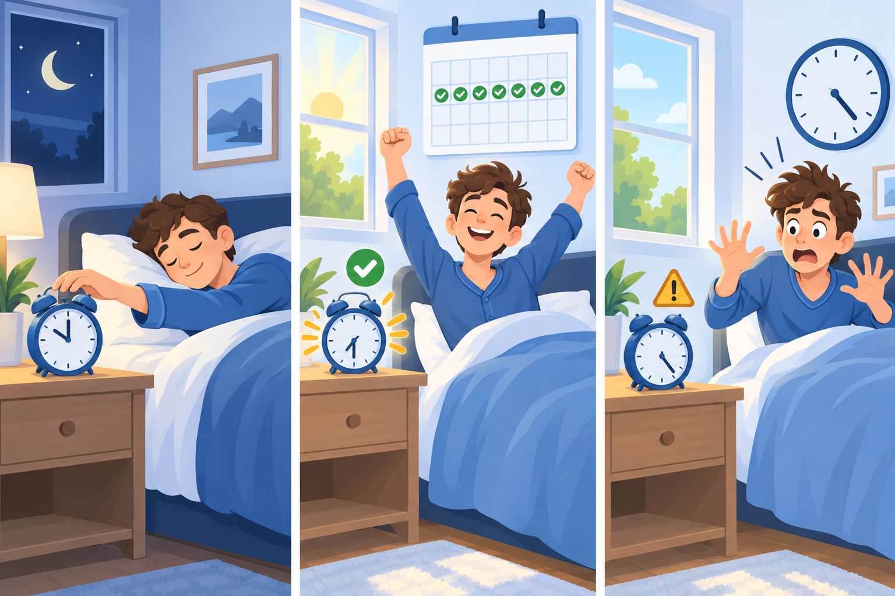

CHAPTER 05 · PRINCIPLES OF RELIABILITY
신뢰성의 원리
사람들이 믿고 의지할 수 있는 디지털 프로덕트의 조건을 안전성·보안성·안정성으로 나누고, 인공지능에 대한 신뢰감을 주는 방법을 설명합니다.
신뢰성의 의미
신뢰성(Reliability)은 특정한 사용 조건에서 고유의 기능을 안전하고 지속적으로 고장 없이 수행할 수 있는 성질입니다. 사용자는 기능이 필요할 때마다 제대로 작동해야 프로덕트를 믿고 쓸 수 있습니다.
알람 시계로 보는 유용성과 신뢰성
| 관점 | 알람 시계에서 확인할 점 | 이 장의 구분 |
|---|---|---|
| 유용성 | 설정한 시각에 정확히 울리고, 적절한 소리 크기로 사용자를 깨운다. | 목적 달성을 효과적으로 돕는가 (3장) |
| 신뢰성 | 별다른 고장 없이 매일 충실하게 울린다. | 그 기능을 지속적으로 고장 없이 수행하는가 |
중요한 날 알람이 울리지 않으면 사용자는 시계가 쓸모없다고 느낄 수 있습니다. 하지만 깨워 주는 기능 자체보다 그 기능이 매일 작동하는지가 문제이므로, 유용성과 신뢰성을 구분해야 합니다.


소프트웨어 신뢰성과 설계 단계
- 컴퓨터·네트워크 신뢰성에서 출발한 개념은 소프트웨어 신뢰성으로 발전하며, 주어진 환경에서 주어진 기간 동안 주어진 작업을 문제없이 안전하게 수행하는 것으로 정립되었습니다.
- 하드웨어는 물리적 노화나 고장으로 신뢰성이 떨어지지만, 소프트웨어는 설계 단계의 결함이 문제가 됩니다. 소프트웨어의 오류를 줄이려면 시스템 분석·설계 단계부터 결함을 점검해야 합니다.
- 디지털 헬스에서는 오류가 환자의 건강에 영향을 줄 수 있으므로 신뢰성을 더 엄격하게 다룹니다.
조사 결과가 보여 주는 불안
원본이 인용한 환자 조사에서는 응답자의 19.4%가 개인 의료 정보 보호와 보안 문제를 우려했습니다. 디지털 헬스를 잘 이해할수록 ‘오류 및 의료사고의 위험성’에 대한 우려는 줄었지만, ‘개인 정보 보호 및 보안 문제’에 대한 걱정은 늘었습니다.
이 조사에서는 기능의 정확성뿐 아니라 의료 정보 보호에 대한 걱정도 신뢰와 연결되어 있습니다.
설계 단계에서 관계자들의 요구, 다른 시스템과의 연계, 사용 환경을 검토해야 합니다. 의료처럼 복잡하고 위험한 작업에서는 과업 분석으로 오류가 생길 지점을 찾아 줄입니다.
감성과 신뢰감
신뢰성을 갖춘 프로덕트를 만드는 것과 사용자가 그것에 신뢰감(Credibility)을 갖는 것은 다릅니다. 신뢰감은 프로덕트가 갖춘 신뢰성에 대해 사용자가 지속적으로 믿음을 가지는 마음이며, 감성의 하위 요소입니다.
감성과 세 가지 하위 개념
감성(Emotion)은 외부 자극에 의한 감각이나 지각으로 사람의 내부에 일어나는 미적이고 심리적인 체험입니다. HCI의 초점이 UI에서 UX로 넓어지면서 기능과 사용성에 더해, 사용하면서 즐거움을 느끼는지도 중요해졌습니다.
| 하위 개념 | 뜻 | 예시 |
|---|---|---|
| 정서 | 특정 대상에 대해 단시간(보통 몇 분, 많아야 몇 시간 미만) 느끼는 핵심 감성 | 공포 영화의 장면에서 느낀 두려움은 영화가 끝나면 대개 잊힌다. |
| 정취 | ‘기분’에 가까우며, 강도는 약하지만 더 오래 지속되고 특정 대상과 관계없이 환경의 영향을 받는 감성 | 하루 종일 불쾌한 상태, 따뜻하고 부드러운 색조의 화면에서 느끼는 편안함 |
| 인상 | 어떤 대상물에 대해 처음 느끼는 감성. 아직 정서로 관념화되지 않았으며, 마음에서 다시 재생되면 정서로 변한다. | 제품을 처음 쓸 때 남은 ‘경험의 잔상’이 다시 사용할지 결정하는 데 영향을 준다. |
p. 16의 도식에서 정서는 ‘1차 반응’, 인상은 ‘정서와 정취를 통합한 경험의 잔상’입니다. 첫 사용에서 남은 인상은 나중에 제품을 떠올릴 때의 정서와 재사용 판단에 영향을 줄 수 있습니다.
신뢰감은 언제 생기는가
- 디지털 프로덕트가 핵심적으로 전달해야 하는 감정은 신뢰감입니다. 병원과 의료진을 떠올릴 때 신뢰감을 느끼는 이유는 몸과 건강 문제를 믿고 맡길 수 있다고 여기기 때문입니다.
- 사용자는 프로덕트가 기대한 긍정적 결과를 제대로 해냈을 때 믿음직스럽다고 느낍니다. 디지털 헬스에서는 효과를 기대하기 전에 사용 과정이 위험하지 않고 의료 정보 보안이 철저하다는 사실이 입증되어야 안심할 수 있습니다.
- 오류나 버그 없이 기능이 일관되게 작동하면 사용자는 프로덕트를 믿게 됩니다. 신뢰성은 프로덕트의 성질이고, 신뢰감은 이를 믿는 사용자의 마음입니다.
감성과 신뢰감의 관계를 설명하는 절입니다. 신뢰감은 신뢰성에 대한 믿음이면서 감성의 하위 요소이기도 합니다.
신뢰성의 세 가지 조건
원본은 신뢰성의 구성 요소를 안전성(Safety), 보안성(Security), 안정성(Stability)으로 정의합니다. FDA가 제시한 실세계 헬스 분석(RWHA)과 제품 성능 분석(PPA)에 속하는 속성에서 가져왔으며, 디지털 헬스뿐 아니라 일반 디지털 프로덕트에도 적용된다고 설명합니다.
| 세부 요인 | FDA가 제시한 개념 | 교재의 조작적 정의 |
|---|---|---|
| 안전성 · Safety | Clinical Safety (RWHA) | 잠재적 위험이 적절히 관리 및 완화되고 있다는 확신을 제공하는 속성 |
| 보안성 · Security | Cybersecurity (PPA) | 프로덕트 내에 통용되는 데이터를 보호하고 방어하는 속성 |
| 안정성 · Stability | Product Performance (PPA) | 내부 및 외부 요인에 영향받지 않고 서비스의 본질적 기능을 지속적으로 제공하는 속성 |
세 요소를 구분하는 질문
- 안전성: 사용자에게 해를 가하지 않는가? 잠재적 위험이 관리·감소되고 있다는 확신을 주는가?
- 보안성: 시스템 안에서 생성되고 저장되는 데이터를 보호하는가?
- 안정성: 오류나 결함으로 성능이 떨어지지 않고, 실제 사용 환경에서 본질적인 기능을 일정하게 제공하는가?
안전성·보안성·안정성은 기능의 작동 여부만으로 판단하지 않습니다. p. 21의 도식은 임상·기술·보안 측면을 함께 평가하는 관점을 보여 줍니다.
표의 세 요인은 신뢰성을 구성합니다. 4장의 사용성이 사용자가 기능을 쉽게 조작할 수 있는지를 다뤘다면, 여기서는 그 기능이 안전하게 계속 작동하고 데이터를 보호하는지를 다룹니다.
안전성(해를 끼치지 않음)과 안정성(성능이 일정함)은 글자가 비슷해 헷갈리기 쉽습니다. 혈당 측정기가 잘못된 경고로 위험한 행동을 유도하면 안전성, 측정할 때마다 수치가 들쭉날쭉하면 안정성 문제로 먼저 생각해 봅니다.
안전성: 위험의 심각도와 발생 가능성
안전성은 디지털 프로덕트의 사용 절차와 방법이 안전하다는 뜻입니다. 안전성 분석은 세 단계로 진행하며, 분석한 위험은 심각도와 발생 가능성을 조합한 2차원 위험 매트릭스(Risk Matrix, ISO 14971)로 표현합니다.
안전성 분석의 세 단계
- 임상 시험 등 검증 결과로 평가할 수 있는 안전성 수준을 정하기 위해 사용 범위(사용 기간·횟수·강도, 시험 대상 수)를 검토합니다.
- 이상 사례와 다르게 도출된 검사 결과를 확인하고, 인구학적 특성이나 사용 방법처럼 이상 사례에 영향을 줄 수 있는 요인을 분석합니다.
- 작동이 중단되었거나 상해를 입은 사용자를 면밀히 조사해 중대한 이상 사례와 기타 중요한 이상 사례를 식별합니다.
세 단계의 기본 구조를 유지하면서 적용 분야의 특성에 맞게 분석합니다.
2차원 위험 매트릭스 읽기
- 심각도(가로축): 문제가 생겼을 때 결과가 얼마나 심각한가. 사소한·경미한·상당한·중대한·치명적의 5단계이며, ‘치명적’은 사망까지 이를 수 있는 피해입니다.
- 발생 가능성(세로축): 위험 로그에 기록된 빈도를 바탕으로 한 합리적인 질적 판단입니다. 매우 낮음부터 매우 높음까지 5단계로 평가합니다.
- 두 축을 함께 보아 안전성 등급을 정합니다. 발생 가능성이 낮고 심각도가 사소하면 매우 높은 안전성인 1등급, 발생 가능성이 매우 높고 치명적이면 매우 낮은 안전성인 5등급입니다.
| 발생 가능성 \ 심각도 | 사소한 | 경미한 | 상당한 | 중대한 | 치명적 |
|---|---|---|---|---|---|
| 매우 높음 | 3 | 4 | 4 | 5 | 5 |
| 높음 | 2 | 3 | 3 | 4 | 5 |
| 보통 | 2 | 2 | 3 | 3 | 4 |
| 낮음 | 1 | 2 | 2 | 3 | 4 |
| 매우 낮음 | 1 | 1 | 2 | 2 | 3 |
사례 표의 두 가지 계산 방식
p. 27의 ‘뽀미’는 ADHD 어린이를 위한 디지털 헬스 서비스로, 네 가지 문제의 평균 위험 정도가 2등급으로 추정된 사례입니다. p. 28의 스마트워치 건강 알림 사례는 위험 수준을 점수로 계산합니다.
| 위험 상황 | 심각도 | 발생 가능성 | 위험 수준 | 해석 |
|---|---|---|---|---|
| 1. 알림이 늦게 뜸 | 낮음 (1점) | 보통 (2점) | 2점 | 큰 위험은 아니지만 개선 필요 |
| 2. 알림이 전혀 안 뜸 | 높음 (4점) | 낮음 (1점) | 4점 | 드물지만 생명과 직결될 수 있어 관리 필요 |
| 3. 심박수 오류 측정으로 잘못된 경고 표시 | 중간 (3점) | 높음 (4점) | 12점 | 자주 발생하고 혼란 유발 → 즉시 개선 필요 |
| 4. 시스템 전체 다운 | 매우 높음 (5점) | 낮음 (1점) | 5점 | 드물지만 재난 수준 → 비상 대책 필요 |
p. 28의 위험 수준은 심각도 점수 × 발생 가능성 점수(최대 25점)이며, p. 26의 1~5등급과 다른 척도입니다. 심각도 명칭도 p. 25와 다르므로, 계산할 때는 해당 표의 점수와 명칭을 사용합니다.
곱셈 방식에서는 3번(12점)이 우선 개선 대상입니다. 4번처럼 드물어도 결과가 치명적인 위험에는 낮은 점수와 관계없이 비상 대책이 필요합니다.
보안성: 데이터를 지키는 여섯 항목
보안성은 사용자 데이터에 대한 사이버 공격, 데이터 가로채기, 조작이나 오용에 대비하는 것입니다. 디지털 헬스는 건강 정보, 금융 서비스는 금융 정보, 소셜 네트워크는 사진과 신상 정보처럼 대부분의 도메인이 민감한 데이터를 다룹니다.
디지털 프로덕트의 약점인 정보 취약성(Information Vulnerabilities)에는 인구통계·신원·사용 내역 같은 정보 유출과 데이터 오염이 포함됩니다. 이를 보완하려면 엄격한 가이드라인과 표준 절차를 마련하고, 각 지침이 지켜지는지 지속적으로 검토해야 합니다.
| 세부 요인 | 내용 | 방법 |
|---|---|---|
| 보안 정책 | 시스템 운영에 대한 보안 정책이 수립되었는지 여부 | 사용자 정보는 암호화해 저장하고 전송 구간에 암호화 수단을 제공한다. 정해진 휴지 시간 후 자동 로그오프·세션 종료가 이루어지게 한다. |
| 사용자 데이터 암호화 | 데이터를 축적·저장할 때 개인 식별 정보를 포함한 정보가 암호화되는지 여부 | (위 칸과 병합된 같은 방법) |
| 변경 방지 | 다른 사용자가 무단으로 수정할 수 없도록 보호하는지 여부 | (위 칸과 병합된 같은 방법) |
| 경보 발생 | 비상시에 시각 또는 청각 경보가 발생하는지 여부 | 오작동으로 인한 데이터 손상·왜곡을 막기 위해 잘못 입력된 정보를 알 수 있는 알림을 제공한다. |
| 기밀성 | 사용자의 개인 정보 및 시스템 운영에 대한 보안 정책이 수립되었는지 여부 | (위 칸과 병합된 같은 방법) |
| 가용성 | 공식 인증된 사용자의 요청에 따라 관련 정보를 즉시 제공하는지 여부 | 생체 정보·사용 결과·개인 정보를 나타내는 기능이 있으면 데이터를 확인할 수 있게 하고, 송수신된 데이터를 표현할 수단(화면, 글자 등)을 제공한다. |
표 3에서 보안 정책·사용자 데이터 암호화·변경 방지는 하나의 방법 칸을 공유하고, 경보 발생·기밀성도 하나의 칸을 공유합니다.
가이드라인을 항목과 연결하기
- 일정 시간 사용하지 않으면 자동으로 로그아웃·세션 종료 → 기밀성. 허가되지 않은 사람에게 개인 정보가 공개되거나 다른 용도로 쓰이지 않게 미리 막습니다.
- 정보가 잘못된 방향으로 바뀌면 기존 사용자에게 알림 → 변경 방지(타인이 바꾸지 못하게 하는 장치)와 경보 발생(시각·청각 알림). 의도한 변경이면 무시하고, 아니면 복구합니다.
- 사용자 정보를 암호화해 저장하고 전송 구간도 암호화 → 사용자 데이터 암호화.
- 승인된 사람이 필요한 때 필요한 곳에서 정보를 즉시 쓸 수 있게 → 가용성.
자동 로그아웃은 표 3의 병합된 방법 칸에 있지만, p. 32의 설명에서는 개인 정보 노출을 막는 ‘기밀성’ 사례입니다.
안정성: 일정하게 작동하기
안정적이라는 말은 바뀌거나 달라지지 않고 일정한 상태를 유지한다는 뜻입니다. 약품의 안정성이 유통기한 동안 효과가 변하지 않는 것이듯, 디지털 프로덕트의 안정성은 시스템이 망가지지 않고 잘 작동하는 것과 의도하지 않은 오류가 발생하지 않는 것 전반을 아우릅니다.
p. 34의 사례에서는 당뇨 환자가 하루 1~2회 혈당을 측정합니다. 측정 도구가 불안정해 잴 때마다 다른 수치가 나오면 환자는 도구를 믿을 수 없고, 정확한 혈당을 파악하기 어려워 건강에 문제가 생길 수 있습니다. 안정성이 떨어지면 사용성과 신뢰감도 낮아집니다.
안정성을 확보하는 방법으로는 신뢰할 수 있는 외부 기관의 공인 인증 시험 등이 있습니다.
소프트웨어 위험 관리 가이드라인
안전성·보안성·안정성을 확보하려면 사용자가 겪을 문제를 미리 파악하고 예방책을 마련해야 합니다. 발생 가능한 문제를 찾고, 위험 요인을 분석한 뒤 해결책을 정합니다.
원본은 대표 도구로 ‘IT 네트워크로 연결된 의료 기기 혹은 건강 소프트웨어의 안전성과 효과성, 그리고 보안 관리에 대한 국제 가이드라인(IEC 80001-1:2020)’을 소개합니다. 이 가이드라인은 신뢰성을 지속적으로 관리하는 방안을 다룹니다.
| 단계 | 하는 일 | ‘마음검진’ 사례 |
|---|---|---|
| 1. 위험 요소 분석 및 식별 | 시스템의 어느 지점에 초점을 둘지 범위를 정하고, 사용 중 생길 수 있는 위험 요소를 추정해 특성과 중요도로 범주화한다. | 정신 건강 설문 응답도 의료 데이터이며, 유출되면 제3자가 정신 상태를 알게 되는 사생활 침해가 생길 수 있다. |
| 2. 대응 방안 평가 | 위험이 사용자에게 주는 영향, 심각도, 발생 빈도로 평가하고 위험 요소별 대응 방안을 구상한다. | 모든 검진 데이터를 익명화하고 개인 식별이 가능한 자료는 삭제한다. |
| 3. 위험 요소 통제 | 대응 방안의 이익과 손해를 분석해 통제 방안을 고르고, 시행 후 효과를 평가해 한 주기를 마무리한다. | 데이터 암호화와 보안 서버 구축. 관리 작업은 늘지만 정확한 데이터와 믿고 쓰는 경험을 얻으므로 이익이 더 크다고 판단하고, 효과는 사용자 인터뷰와 응답 정확도로 측정한다. |
위험 관리는 한 번으로 끝나지 않습니다. 통제 방안을 시행하고 효과를 평가한 뒤, 다시 위험을 분석하는 주기를 반복합니다.
두 번째 단계는 p. 7에서 ‘대안 방법 평가’, 본문과 p. 61에서 ‘대응 방안 평가’로 표기되며, 위험에 대응할 방안을 검토하는 단계입니다.
사용자 경험을 고려한 보안성
보안성을 설계할 때는 사용자의 행동도 고려해야 합니다. 강의는 기업 보안에서 사용자가 가장 취약한 부분이어서 보안 공격이 주로 사용자를 대상으로 이루어진다고 설명합니다. 사용자 중심 보안(Usable Security)은 사용자가 보안 기능을 쉽고 편리하게 쓸 수 있도록 사용 용이성에 초점을 맞춥니다.
보안과 편리함의 상충
보안 시스템이 불편하면 그 자체가 위험 요소가 됩니다. 편리함에 치우쳐 보안을 느슨하게 하면 보안의 본질을 놓치고, 보안에 지나치게 치중하면 사용성이 낮아져 오히려 보안성이 훼손될 수 있습니다. 비밀번호를 여러 번 입력하게 하면 사용자는 자동 입력 프로그램을 쓰거나 같은 비밀번호를 반복하는 등 취약한 선택을 할 수 있습니다.

사용자 경험을 고려한 보안 체계
- 사용자의 눈높이에 맞춘 정보: 보안 지식과 행동 수준은 집단마다 다르므로 전문 용어를 자제하고, 도움말·오류 처리·보안 상태 안내를 이해하기 쉽게 제공합니다.
- 보안 기능에 접근하는 방식: 기능을 찾기 어려우면 사용자가 이용하지 못할 수 있습니다. 인터페이스에서 쉽게 찾을 수 있게 배치하고, 조작을 단순하게 만들어 인지 부하를 줄입니다.
- 균형: 보안 절차를 강화해도 사용자가 불편해서 우회하면 신뢰성이 낮아질 수 있습니다. 사용성과 신뢰성의 상충 관계를 고려해 절차를 설계합니다.
| 분류 | 지침 |
|---|---|
| 사용자 정보를 보호하고 있는가? | 개인 정보에 대한 암호화된 문서를 사용하거나 복호화한다. |
| 사용자에게 충분한 정보를 제공하는가? | 개인이 시스템의 현재 보안 상태를 알 수 있어야 한다. 보안 정책에 필요한 가이드라인과 사용자에게 필요한 보안 가이드라인을 분리해서 제공한다. |
| 사용자 관점에서 이해가 쉬운가? | 도움말·오류 처리·보안 시스템 상태 안내를 이해하기 쉽게 제공하고, 보안 기능의 도움말·매뉴얼·문서를 쉽게 찾아볼 수 있어야 한다. |
| 사용자가 사용하기 용이한가? | 보안 기능이 인터페이스에서 가시적이고 쉽게 접근 가능해야 한다. 익숙한 사용자에게 바로 가기를 주고, 일정 부분 사용자 지정을 허용하며, 인터페이스를 단순하게 유지해 정보 과부하를 줄인다. |
강의에서는 AI-UX 설계 참고 자료로 Microsoft Research의 〈Guidelines for Human-AI Interaction〉, Google의 〈People + AI Guidebook〉, 카네기멜론대학의 〈Co-designing Checklist for fairness AI〉를 소개합니다. 이 자료들은 디자인 단계·주제·사례별 지침을 제공합니다.
보안 안내는 사용자가 이해할 수 있는 말로 제공하고, 필요한 기능은 쉽게 찾고 조작할 수 있게 합니다.
HCI 3.0에서 인공지능에 대한 신뢰감
인공지능 프로덕트도 안전성·보안성·안정성을 갖추고 사용자에게 신뢰감을 주어야 합니다. 3장에서 다룬 심성 모형은 사용자가 이해하는 AI의 작동 방식과 연결되고, 가치 모형은 AI에 기대하는 가치와 연결됩니다. 이 모형들이 실제와 다르면 신뢰성에 대한 인식에도 차이가 생깁니다.
설명하기 어려운 이유
- 구조의 문제: 원본은 2023년 공개된 ChatGPT-4가 심층신경망(Deep Neural Network)을 쓰는 자연어 처리 모델이며, 딥러닝은 결과는 확인할 수 있어도 결과를 낸 과정과 근거를 알기 어려운 블랙박스 문제를 지닌다고 설명합니다.
- 지식의 문제: 인공지능에 대한 관심은 늘었지만 충분한 지식을 갖춘 사람은 많지 않습니다. 일부를 설명하더라도 사용자 입장에서는 이해하기 어렵습니다.
- 사용자가 결과와 과정을 이해하기 어려우면 안전성·보안성·안정성이 어떻게 확보되는지 설명하기도 어렵습니다.
강의의 ChatGPT-4 파라미터 수 ‘약 100조 개 이상’은 공식 공개값이 아닌 추정치입니다.
인식과 실제의 차이
| 원본이 제시한 내용 | 수치 |
|---|---|
| AI 오류로 인명 피해가 생길 것을 우려하는 비율 | 48.6% |
| AI가 일자리를 대체할 것을 우려하는 비율 | 33.7% |
| 대한민국 국민의 인공지능 신뢰도 | 39% 수준 |
| 10만 km당 사고율: 사람이 운전하는 일반 자동차 / 테슬라 자율 주행차 | 약 13% / 1~2% |
원본은 대중의 인식과 달리 인공지능 프로덕트가 기존 프로덕트보다 안전하고 보안성이 높으며 안정적이라고 주장합니다. 학습한 범위에서는 틀릴 가능성이 낮고, 결과의 정확도를 계산할 수 있어 성능을 미리 예측하고 개선할 수 있다는 이유입니다. 그런데도 사람들은 사고 소식을 접하면 안전성이 낮다고 느끼고 오류에 집중합니다.
위 수치와 ‘더 안전하다’는 판단은 강의에서 인용한 주장입니다. 이 사례에서는 성능에 대한 설명과 사용자가 느끼는 신뢰감이 다를 수 있다는 점을 구분합니다.
주도권의 이동과 신뢰감
2장 ‘판단적 경험’의 기인점은 행동의 원인을 사람과 시스템 중 어디에 두는지 구분합니다. AI 프로덕트는 시스템 주도적일 가능성이 높습니다. 자율 주행차에서는 운전의 주도권이 사람에서 시스템으로 넘어갑니다. 익숙하게 직접 하던 일을 시스템에 맡겨야 하는 변화가 사용자의 불안과 신뢰감 상실로 이어질 수 있습니다.
AI의 정확도를 높이는 것과 사용자에게 신뢰감을 주는 것은 별개입니다. 99.9%의 정확도에도 0.1%의 오류 가능성이 남으므로, 강의는 UX 설계로 신뢰감을 보완하는 관점을 제시합니다. 강의는 주요 국가가 위험과 인간 중심을 고려한 AI 신뢰 확보 정책을 추진한다고 소개합니다. 이와 연결해 사용자에게 신뢰감을 주는 UX의 관점에서 책임지는 인공지능과 믿음직한 인공지능을 구분합니다.
책임지는 인공지능
책임지는 인공지능(Responsible AI)은 공정성·안전성·보안성·다양성·투명성·책무성을 갖추어야 한다는 관점입니다. 강의는 MS의 설명을 바탕으로, 판단 근거를 설명하는 설명 가능한 인공지능(Explainable AI, XAI)에서 더 나아가 사회에 도움이 되도록 AI를 설계하고 운영하는 책임을 강조합니다.
| 개념 | 뜻 | 원본의 예와 이유 |
|---|---|---|
| 공정성 | 특정 이해관계에 얽매이지 않고 있는 그대로 판단한다. | 법률 지원 AI가 특정 이해 집단에 유리하게 판단하면 위배된다. 누가 어떻게 개발하느냐에 따라 치우칠 수 있어 경계해야 한다. |
| 안전성 | 인간의 판단·예측을 보조하는 만큼 위험 발생 가능성이 커져 특히 중요하다. | 통계적 확률에 근거하고 학습된 상황에만 대처할 수 있다는 한계 때문이다. |
| 보안성 | AI에 활용되는 데이터가 유출되면 사용자가 큰 피해를 입을 수 있다. | 다양하고 많은 양의 데이터를 활용하므로 기존 프로덕트보다 중요하다. |
| 다양성 | 인종·성별·연령 등에 대한 편견 없이 다양한 가치를 아우른다. | 편향된 운동 데이터로 학습하면 특정 집단에 낮은 수준의 운동만 추천할 수 있다. 편향되지 않은 데이터 수집이 중요하다. |
| 투명성 | 사용자가 인공지능의 판단과 그 근거를 이해할 수 있어야 한다. | 인사 업무에 AI를 쓸 때 판단 근거가 빈약하거나 이해할 수 없으면 관계자가 결과를 받아들이기 어렵다. |
| 책무성 | 시스템을 설계하는 담당자가 시스템의 작동에 책임을 진다. | 데이터 추적, 문제 모니터링, 관계자에게 충분한 설명 제공. 결함으로 피해를 입지 않고 가용한 정보로 지원받게 한다. |
공정성·안전성·보안성·다양성이 각각 충족되어도 판단 근거를 알 수 없거나 책임질 사람이 없다면 충분하지 않습니다. p. 53의 도식은 투명성과 책무성을 다른 네 조건의 바탕에 놓습니다.
집단 간 신체 능력의 차이와 학습 데이터의 편향은 구분해야 합니다. 강의의 운동 추천 사례는 편향된 데이터로 특정 집단을 제한하는 문제를 다루며, 인간에 대한 가치 판단은 사람의 몫이라고 설명합니다.
믿음직한 인공지능
믿음직한 인공지능(Trustable AI)은 사람이 믿고 사용할 수 있는 AI를 뜻합니다. 강의에서는 예측 가능성·의지 가능성·믿음의 세 조건을 마음 건강 서비스 ‘마음정원’ 사례로 설명합니다.
| 조건 | 뜻 | 마음정원 사례 |
|---|---|---|
| 예측 가능성 · Predictability | 결과가 무엇일지 맞히는 것이 아니라, 도출된 결과가 납득 가능할 것임을 예측할 수 있는 것 | ‘기분 전환을 위해 샤워를 하세요’는 납득할 수 있지만 ‘밀린 업무를 해보세요’는 예측도 납득도 어렵다. |
| 의지 가능성 · Dependability | 능동적인 반응으로 라포(친밀도)를 쌓아 일상의 동반자가 되어 가는 과정에서 생기는 속성 | 진행 상황에 맞춰 적시에 격려하면 사용자가 앱을 친근하게 느끼고, 반응을 학습해 친근감이 더 높아질 수 있다. |
| 믿음 · Faithfulness | 얕은 수준: 목표를 믿고 맡길 수 있음. 깊은 수준: 상식이나 외부 정보에 반하는 결론도 믿음 | ‘오늘은 평소 하던 운동을 잠시 멈추는 것이 좋겠습니다’라는 답에도 이유가 있을 것이라 믿고 따른다면 깊은 수준의 믿음이다. |

AI에 대한 신뢰감은 안전성·보안성·안정성을 바탕으로 형성됩니다. 여기에 납득할 수 있는 결과, 지속적인 상호작용, 목표를 믿고 맡길 수 있는 경험이 더해져야 합니다.
깊은 수준의 믿음이 있다고 해서 AI의 결론을 무조건 따라야 하는 것은 아닙니다. 사용자가 예상 밖 결론을 받아들일지 판단하려면 그 근거를 이해하고 최종 결정을 통제할 수 있어야 합니다.
위험 매트릭스로 안전성 등급 정하기
심각도와 발생 가능성을 고르면 원본 p. 26의 매트릭스에서 안전성 등급을 찾아 줍니다. 아래 상황은 개념 연습을 위한 가상 사례이며 실제 제품 평가가 아닙니다.
선택: 상당한 · 보통 → 3등급
| 발생 가능성 \ 심각도 | 사소한 | 경미한 | 상당한 | 중대한 | 치명적 |
|---|---|---|---|---|---|
| 매우 높음 | 3 | 4 | 4 | 5 | 5 |
| 높음 | 2 | 3 | 3 | 4 | 5 |
| 보통 | 2 | 2 | 3 | 3 | 4 |
| 낮음 | 1 | 2 | 2 | 3 | 4 |
| 매우 낮음 | 1 | 1 | 2 | 2 | 3 |
- 복약 알림 앱이 가끔 알림을 몇 분 늦게 보낸다 → 심각도 ‘경미한’, 발생 가능성 ‘보통’이면 2등급.
- 인슐린 용량 계산기가 드물게 잘못된 값을 보여 준다 → 심각도 ‘치명적’, 발생 가능성 ‘매우 낮음’이어도 3등급. 드물다는 이유만으로 1등급이 되지 않습니다.
- 운동 기록 앱이 자주 걸음 수를 조금 다르게 센다 → 심각도 ‘사소한’, 발생 가능성 ‘매우 높음’이면 3등급. 이 경우는 안정성 문제로도 함께 점검합니다.
토론: 인공지능을 어디까지 믿을까
원본 p. 62의 토론 질문입니다. 각 질문 아래의 관점은 원본이 붙인 짧은 안내이며, 정답이 정해진 문제가 아닙니다.
- AI가 인간보다 더 정확한 판단을 내릴 때 최종 결정을 AI에게 맡겨도 되는가? → 책임성과 인간 통제권(Human Oversight)의 관계를 논의합니다.
- 설명 가능한 AI(Explainable AI)는 항상 사용자의 신뢰를 높이는가? → 투명성은 필요조건이지만, 과도한 정보는 오히려 인지 부하를 높일 수 있습니다.
- AI의 공감성은 실제 감정인가, 시뮬레이션된 감정인가? → 정서적 신뢰의 한계를 성찰합니다.
첫 질문은 책무성과 깊은 수준의 믿음, 둘째 질문은 투명성과 4장의 이해가능성, 셋째 질문은 감성과 의지 가능성을 근거로 논의할 수 있습니다.
서비스의 신뢰성 점검표 만들기
이해 보완 · 자주 쓰는 건강·금융·학습 서비스 하나를 골라 신뢰성과 신뢰감을 나눠 점검하는 활동입니다.
- 서비스·사용자·핵심 과업을 한 문장으로 적습니다. 예: 대학생이 학습 앱으로 과제 마감을 관리한다.
- 안전성·보안성·안정성 각각에 대해 실제로 겪었거나 상상할 수 있는 문제를 하나씩 적고, 위험 매트릭스로 등급을 매깁니다.
- 보안 기능 하나(로그인, 2단계 인증, 기기 관리 등)를 표 4의 네 질문으로 점검합니다.
- AI 기능이 있다면 예측 가능성·의지 가능성·믿음 중 무엇이 부족한지 판단하고, 개선안과 확인 방법을 씁니다.
예시 답안과 완료 기준
예시: 학습 앱의 마감 알림이 가끔 오지 않는다(안정성, 심각도 ‘상당한’·발생 가능성 ‘낮음’ → 2등급). 로그인 유지 기간을 사용자가 알 수 없다(표 4의 ‘충분한 정보 제공’ 부족). 개선: 알림 실패 시 앱을 열면 놓친 마감을 먼저 보여 주고, 설정 화면에 로그인 유지 상태를 표시한다. 확인: 일주일 동안 알림 누락 횟수와, 사용자가 현재 로그인 상태를 설명할 수 있는지 확인한다.
완료 기준: 세 요소별 문제와 등급, 보안 기능 점검 결과, 개선안과 확인 방법을 적었는지 봅니다. ‘믿을 만하게 만든다’처럼 막연한 표현은 관찰할 수 있는 행동과 상태로 바꿉니다.
확인 문제와 해설
이해 보완 · 개념 구분을 위한 자체 확인 문제입니다. 실제 시험 문제가 아닙니다.
객관식 정답과 이유 · 인쇄용 답안
- 2번 선택지. 기능 자체는 목적에 맞으므로 유용성은 갖췄습니다. 고장 없이 지속적으로 수행하지 못하는 것은 신뢰성 문제입니다. (p. 8)
- 2번 선택지. 하드웨어와 달리 소프트웨어는 설계 단계의 결함에 의해 타격을 받으므로 분석·설계 단계부터 신중해야 합니다. (p. 10)
- 2번 선택지. 정취는 강도는 약하지만 오래 지속되며 특정 대상과 관계없는 막연한 상태입니다. (p. 15)
- 1번 선택지. 원본은 이 사례를 안정성의 예로 들며, 수치가 일정하지 않으면 도구를 신뢰할 수 없다고 설명합니다. (p. 34)
- 2번 선택지. 매트릭스의 해당 칸은 3입니다. 드물게 발생해도 결과가 치명적이면 높은 안전성으로 보지 않습니다. (pp. 25–26)
- 1번 선택지. 허가되지 않은 사람의 접근을 막아 개인 정보가 공개되지 않게 하므로 기밀성으로 설명합니다. (p. 32)
- 3번 선택지. 위험 요소 통제 단계에서 방안을 선택·시행하고 효과를 평가해 한 주기를 마무리합니다. (p. 40)
- 2번 선택지. 보안과 사용성의 상충을 이해하고 균형을 맞추는 것이 핵심입니다. (pp. 41–43)
- 2번 선택지. 투명성은 사용자가 AI의 판단과 근거를 이해할 수 있어야 한다는 개념입니다. (p. 56)
- 1번 선택지. 예측 가능성은 결과가 납득 가능할 것임을 예측할 수 있는 것인데, 이 제안은 예측도 납득도 어렵습니다. 책무성은 책임지는 인공지능의 개념입니다. (p. 58)
핵심 용어 찾아보기
- 신뢰성 · Reliability
- 특정 사용 조건에서 고유의 기능을 안전하고 지속적으로 고장 없이 수행하는 성질.
- 신뢰감 · Credibility
- 프로덕트의 신뢰성에 대해 사용자가 지속적으로 믿음을 가지는 마음. 감성의 하위 요소.
- 감성 · Emotion
- 외부 자극의 감각·지각으로 내부에 일어나는 미적이고 심리적인 체험.
- 정서
- 특정 대상에 대해 단시간 갖는 핵심적인 감성. 인간에게 보편적이다.
- 정취
- 강도는 약하지만 오래 지속되고 특정 대상과 관계없는 기분.
- 인상
- 대상물에 대해 처음 느끼는 감성. 다시 떠올리면 정서로 변한다.
- 안전성 · Safety
- 사용자에게 해를 가하지 않고 잠재적 위험이 관리·완화된다는 확신을 주는 속성.
- 보안성 · Security
- 시스템에서 생성·저장되는 데이터를 보호하고 공격·오용에 대비하는 속성.
- 안정성 · Stability
- 내부·외부 요인에 영향받지 않고 본질적 기능을 일정하게 제공하는 속성.
- 위험 매트릭스 · Risk Matrix
- 심각도와 발생 가능성을 결합해 안전성 등급을 정하는 2차원 표 (ISO 14971).
- 심각도 · Severity
- 문제가 생겼을 때 사용자가 겪는 위험이나 부작용의 크기. 사소한~치명적 5단계.
- 발생 가능성 · Likelihood
- 위험 요소가 얼마나 자주 발생할지에 대한 질적 판단. 매우 낮음~매우 높음 5단계.
- 정보 취약성 · Information Vulnerabilities
- 인구통계·신원·사용 내역 같은 정보 유출과 데이터 오염을 포함하는 약점.
- 기밀성 · Confidentiality
- 개인 정보가 허가되지 않은 사람에게 공개되거나 다른 용도로 쓰이지 않게 막는 것.
- 가용성 · Availability
- 승인된 사람이 필요한 때와 곳에서 정보를 즉시 쓸 수 있게 하는 것.
- 사용자 중심 보안 · Usable Security
- 사용자가 보안을 쉽고 편리하게 여기도록 사용 용이성에 초점을 맞춘 보안.
- 블랙박스 · Black Box
- 결과는 확인할 수 있지만 결과를 낸 과정과 근거를 알 수 없는 문제.
- 책임지는 인공지능 · Responsible AI
- 공정성·안전성·보안성·다양성·투명성·책무성으로 사회적 선행을 능동적으로 추구하는 AI.
- 투명성 · Transparency
- 사용자가 AI의 판단과 그 근거를 이해할 수 있어야 한다는 원칙.
- 책무성 · Accountability
- AI 시스템을 설계한 담당자가 시스템의 작동에 책임을 지는 것.
- 믿음직한 인공지능 · Trustable AI
- 예측 가능성·의지 가능성·믿음을 갖춰 사람들이 믿을 수 있는 AI.
- 예측 가능성 · Predictability
- 도출될 결과가 납득 가능할 것임을 예측할 수 있는 것.
- 의지 가능성 · Dependability
- 능동적 상호작용으로 라포를 쌓아 일상의 동반자가 되며 생기는 속성.
- 믿음 · Faithfulness
- 목표를 믿고 맡김(얕은 수준), 상식에 반하는 결론도 믿음(깊은 수준).
검색 결과가 없습니다.
원본 범위와 보완 설명
- 출처 페이지는 PDF의 첫 쪽부터 세는 번호입니다.
- 요약의 강조 표시는 PDF 본문의 색·굵게·밑줄을 기준으로 합니다.
- 강조는 실제 출제 여부나 중요도 순위를 뜻하지 않습니다.
- 비교표의 풀이·위험 매트릭스 연습·활동·퀴즈는 원문과 구분한 이해 보완 자료입니다.